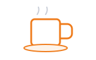

01Greetings · ការស្វាគមន៍Morning
Good morning! How are you doing today?
💡 Meaning: A polite morning greeting asking how someone is feeling or doing. 🇰🇭 ខ្មែរ៖ អរុណសួស្តី! តើអ្នកសុខសប្បាយជាទេថ្ងៃនេះ?
ការស្វាគមន៍ប្រចាំថ្ងៃ · Starting conversations, introducing yourself, and polite phrases
Starting a conversation in English is simple: smile, greet warmly, state your name, and ask how the other person is doing.
 See you soonEnd the chat warmly
See you soonEnd the chat warmlyA natural step-by-step flow: greet warmly, introduce yourself, chat politely, and say goodbye.
Space listen · ← → move · K show text
Good morning! How are you doing today?
💡 Meaning: A polite morning greeting asking how someone is feeling or doing. 🇰🇭 ខ្មែរ៖ អរុណសួស្តី! តើអ្នកសុខសប្បាយជាទេថ្ងៃនេះ?
I am doing well, thank you. And you?
💡 Meaning: A positive response showing gratitude and asking back about the other person. 🇰🇭 ខ្មែរ៖ ខ្ញុំសុខសប្បាយធម្មតាទេ អរគុណច្រើន។ ចុះអ្នកវិញ?
My name is Vuthchan. It is nice to meet you.
💡 Meaning: Used to state your name and express pleasure in meeting someone for the first time. 🇰🇭 ខ្មែរ៖ ខ្ញុំឈ្មោះ វុឌ្ឍច័ន្ទ។ រីករាយណាស់ដែលបានស្គាល់អ្នក។
I am from Cambodia. Where are you from?
💡 Meaning: Tells your country of origin and asks about the other person's hometown or country. 🇰🇭 ខ្មែរ៖ ខ្ញុំមកពីប្រទេសកម្ពុជា។ តើអ្នកមកពីណាដែរ?

How has your day been so far?
💡 Meaning: A friendly small-talk question asking about someone's activities and mood today. 🇰🇭 ខ្មែរ៖ តើថ្ងៃនេះអ្នកយ៉ាងម៉េចដែរ?
Could you please help me with this?
💡 Meaning: A polite request asking someone for assistance or guidance on a task. 🇰🇭 ខ្មែរ៖ តើអ្នកអាចជួយខ្ញុំបន្តិចបានទេ?
I have to get going now. It was great talking to you.
💡 Meaning: A polite way to end a conversation when you need to leave. 🇰🇭 ខ្មែរ៖ ខ្ញុំត្រូវទៅឥឡូវនេះហើយ។ រីករាយណាស់ដែលបានជជែកជាមួយអ្នក។
Have a wonderful day and see you later!
💡 Meaning: A warm farewell wishing someone well until the next time you meet. 🇰🇭 ខ្មែរ៖ សូមឱ្យមានថ្ងៃដ៏ល្អ ហើយជួបគ្នាពេលក្រោយ!
A natural reply is 'I am doing well, thank you! How about you?' rather than only saying 'I am fine'.
💡 English: Saying 'I am doing well' and asking back shows genuine courtesy. 🇰🇭 ខ្មែរ៖ ចម្លើយបែបធម្មជាតិគឺ 'I am doing well, thank you! How about you?' ជាជាងឆ្លើយតែមួយម៉ាត់ 'I am fine'។
Asking 'How about you?' returns the courtesy and keeps the conversation flowing smoothly.
You can say 'I work in technology' or 'I am learning English right now'.
💡 English: Use 'I work in [field]' or 'I am learning [subject]'. 🇰🇭 ខ្មែរ៖ អ្នកអាចនិយាយថា 'I work in technology' ឬ 'I am learning English right now'។
Tap a word's play button to hear it. Hide one side, then recall it before you tap to check.
Good morning! How are you doing today? I am doing well, thank you. And you?
💡 Meaning: A polite morning greeting asking how someone is feeling or doing. 🇰🇭 ខ្មែរ៖ អរុណសួស្តី! តើអ្នកសុខសប្បាយជាទេថ្ងៃនេះ? 💡 Meaning: A positive response showing gratitude and asking back about the other person. 🇰🇭 ខ្មែរ៖ ខ្ញុំសុខសប្បាយធម្មតាទេ អរគុណច្រើន។ ចុះអ្នកវិញ?
My name is Vuthchan. It is nice to meet you. I am from Cambodia. Where are you from?
💡 Meaning: Used to state your name and express pleasure in meeting someone for the first time. 🇰🇭 ខ្មែរ៖ ខ្ញុំឈ្មោះ វុឌ្ឍច័ន្ទ។ រីករាយណាស់ដែលបានស្គាល់អ្នក។ 💡 Meaning: Tells your country of origin and asks about the other person's hometown or country. 🇰🇭 ខ្មែរ៖ ខ្ញុំមកពីប្រទេសកម្ពុជា។ តើអ្នកមកពីណាដែរ?
How has your day been so far? Could you please help me with this?
💡 Meaning: A friendly small-talk question asking about someone's activities and mood today. 🇰🇭 ខ្មែរ៖ តើថ្ងៃនេះអ្នកយ៉ាងម៉េចដែរ? 💡 Meaning: A polite request asking someone for assistance or guidance on a task. 🇰🇭 ខ្មែរ៖ តើអ្នកអាចជួយខ្ញុំបន្តិចបានទេ?
I have to get going now. It was great talking to you. Have a wonderful day and see you later!
💡 Meaning: A polite way to end a conversation when you need to leave. 🇰🇭 ខ្មែរ៖ ខ្ញុំត្រូវទៅឥឡូវនេះហើយ។ រីករាយណាស់ដែលបានជជែកជាមួយអ្នក។ 💡 Meaning: A warm farewell wishing someone well until the next time you meet. 🇰🇭 ខ្មែរ៖ សូមឱ្យមានថ្ងៃដ៏ល្អ ហើយជួបគ្នាពេលក្រោយ!
Q. How should I respond to 'How are you?'
Q. តើខ្ញុំគួរឆ្លើយតបយ៉ាងដូចម្តេចចំពោះសំណួរ 'How are you?'
A. A natural reply is 'I am doing well, thank you! How about you?' rather than only saying 'I am fine'.
A. 💡 English: Saying 'I am doing well' and asking back shows genuine courtesy. 🇰🇭 ខ្មែរ៖ ចម្លើយបែបធម្មជាតិគឺ 'I am doing well, thank you! How about you?' ជាជាងឆ្លើយតែមួយម៉ាត់ 'I am fine'។
Q. How do I tell someone what I do?
Q. តើខ្ញុំគួរប្រាប់គេអំពីការងារ ឬការរៀនសូត្ររបស់ខ្ញុំយ៉ាងដូចម្តេច?
A. You can say 'I work in technology' or 'I am learning English right now'.
A. 💡 English: Use 'I work in [field]' or 'I am learning [subject]'. 🇰🇭 ខ្មែរ៖ អ្នកអាចនិយាយថា 'I work in technology' ឬ 'I am learning English right now'។
Could you please speak a little slower?
💡 English: Requesting the speaker to reduce speed · 🇰🇭 តើអ្នកអាចជួយនិយាយយឺតៗបន្តិចបានទេ?
Sorry, could you repeat that again?
💡 English: Asking someone to repeat what was just said · 🇰🇭 សុំទោស តើអ្នកអាចជួយនិយាយម្តងទៀតបានទេ?
Say it in your head first, then tap the box to check.